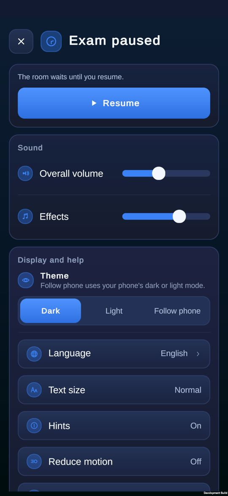
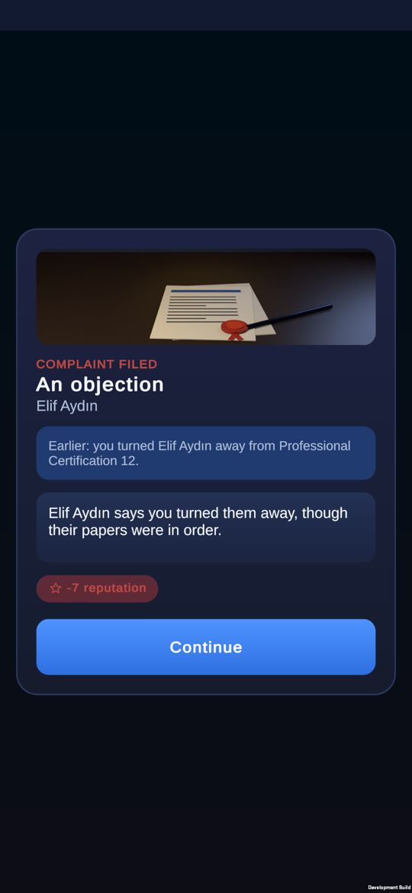
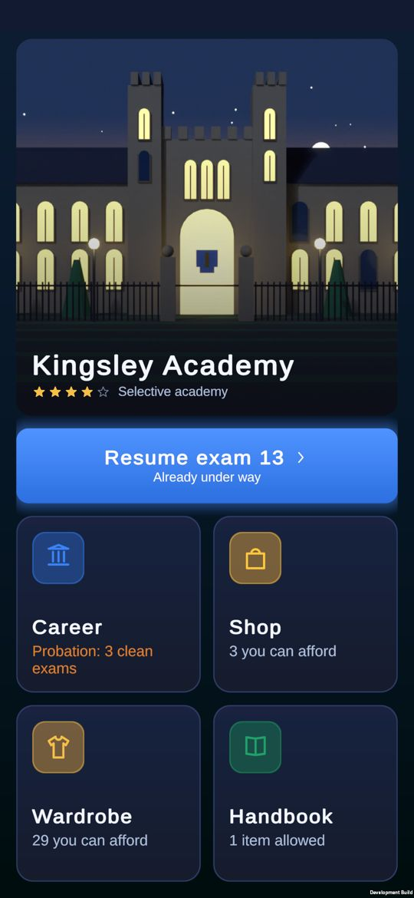
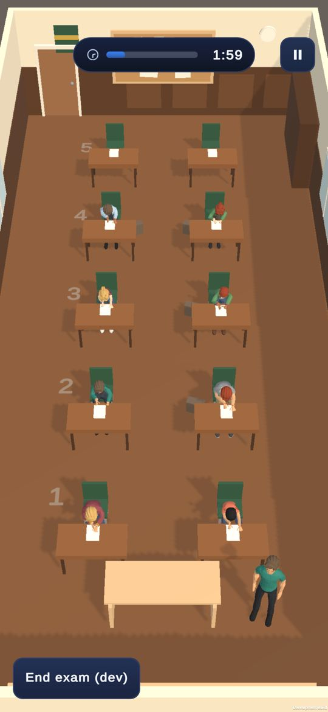
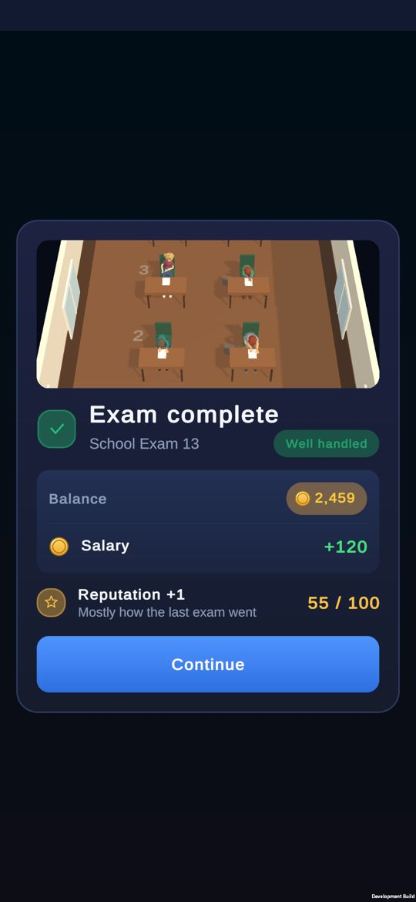
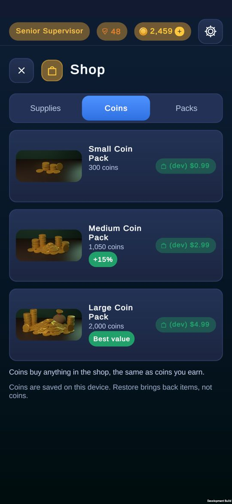
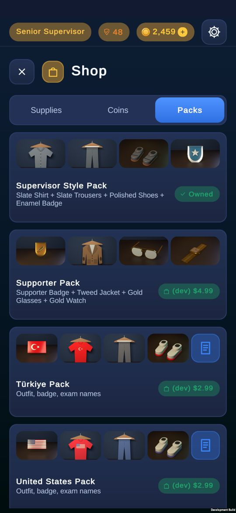
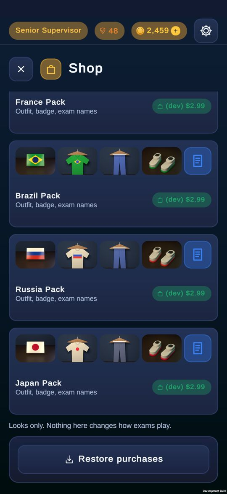
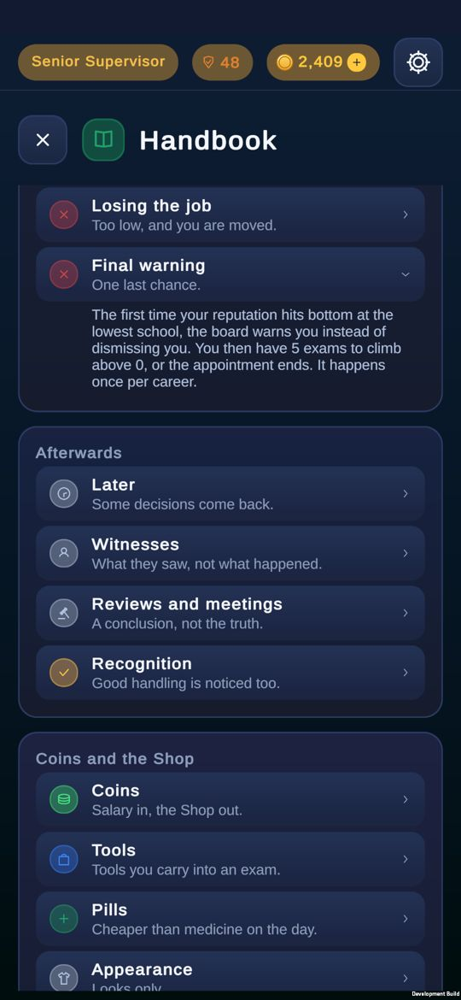

Before launch, nine features of the game were each checked by one agent, read-only. Every finding was typed as a bug, a product decision or polish, and the owner decided before anything was changed. This page shows what the audit found, what was fixed and in which PR, the owner's decisions, the release gate that checked all the fixes together, and what is still open.
57 of 62 findings are fixed or changed as decided. Three were kept as they are by the owner's decision, the tablet layout comes after launch, and one safe-area question is unverified. The four high findings (the exam clock drift, Back closing the app, bought coins lost on Replace, and review cards that always said "No finding") are fixed and checked.
What the audit ran before anything was fixed. No crashes or exceptions in any of it.
Also: 78 wardrobe items with 0 coin-rule violations; careful bot players finish 89–91% of exams "Good"; the careful career's median to the top stays at 58 exams; 16 exams across all school bands release their room assets with no T-poses.
One agent per feature read the code and ran probes, headless simulations and tests, without changing anything. Each finding got an ID
(SIM-1, PAY-4 …), a severity and a type:
Two documentation findings were fixed along with the code. The owner answered the whole list at once on 25 November 2026: fix every clear bug and apply the recommendation on every decision. Questions that came up while fixing were asked again before the change.
Clock, perception, students' behaviour, actions, scoring.
The door: ID checks, chips, consequences and their text.
Cards between exams: reviews, complaints, blackmail, coin effects.
Promotions, stays, schools, warnings, the Handbook.
Prices, buying, wearing, the item sheets.
Store products, offline behaviour, analytics, the privacy text.
Migration, crash safety, save cost, settings.
Sounds, bags, flags, frame rate, framing.
Every screen in 7 languages, and a run on a Galaxy A15.
66 IDs in all; 4 are the same problem seen by two agents (SIM-5 = ROOM-7, SIM-6 = UI-10, EVT-5 = SAV-4, SIM-4 = ADM-4), which leaves 62.
Found. The game's clock was one floating-point number that never reset and ran on every screen. As it grew, float precision changed the exam's length: 148 s after 10 hours of play, 160 s at 42–83 h, 120 s at 167–306 h. At about 583 hours the clock stopped advancing and the exam never ended.
Now. The clock runs only during an exam and starts from zero at each one. A 150 s exam is exactly 1,500 steps at every play time tested, from 0 to 611 hours. Saves moved to version 12; a save written mid-exam on the old clock is moved onto its exam's own clock when it loads and keeps the time it had left.
Found. On the phone, after Home and back into the game, Back closed the app, even mid-exam, and the exam rewound. The cause is in Unity's Android player: each pause unregisters its Back callback, Home pauses twice, and the resume never registers it again, so Android's default handler finishes the app.
Now. A workaround: on focus and resume the game switches Unity's "Back leaves app" setting on and off, which makes Unity register the callback again. On the A15, Back mid-exam pauses on a fresh launch, after Home and after Recents. Back on the hub still exits.

Found. Starting a new career from the title screen and choosing Replace on a saved career that hadn't been loaded discarded that career's unspent bought coins.
Now. Replace reads the old career and carries its unspent bought coins into the new one, as abandoning a loaded career already did.
Found. A board review card was titled "No finding" with a neutral body even when the review went against the player (−10 and probation): the result was only worked out after the tap.
Now. The card is worded from the finding the review will publish, using the same case record and rule, with new bodies for supported and against in 7 languages. A test plays real careers and checks the headline before and after each tap.
Found. Candidate ids restart each exam. A name-mismatch audit, a review card or a "review closed" row looked the id up in the current room, so it named whoever held that id in the next exam. Separately, people turned away were named with masculine forms in French, Portuguese and Russian, and an entry complaint said "you let X into the exam" about someone turned away.
Now. Names come from the exam the event happened in. The door record keeps the person's name and profile when they leave, so gender and name stay right, and the card says "you turned X away".

Found. Cards with only a Continue button changed reputation without showing it: a complaint (−10 and probation), warning and request complaints, reviews (−10 / +3), corruption exposure (−12), a debt notice (−2), and the good ones too (commendation +2, restraint noted +1, favour returned +3).
Now. Each of these cards shows its reputation chip, computed by the same code that applies it, and a "Probation" chip when the tap opens probation (hidden when the player is already on probation). By the owner's decision, three cards still keep their cost hidden: the witness's "Admit mistake", blackmail "Report it" and the manager meeting's "Explain".
Found. A phone glimpsed in the last second before the bell counted as "knowingly ignored": a Poor exam and −3 reputation. It was the only cause of Poor for careful bot players.
Now. A sighting less than 3 s before the bell counts as missed. Careful bots get no Poor from a late sighting.
The fixes went out in six groups, two at a time (one per Unity worktree). Each group branched from the latest main, ran the tests for what it touched, and was reviewed and merged as its own PR.
| ID | Severity | Was | Now |
|---|---|---|---|
| SIM-1 | high | Exam clock drifted with total play time; froze at ~583 h. | Per-exam clock from zero; save v12 migrates mid-exam saves. |
| SIM-2 | med | Phone seen in the last ~1 s counted as knowingly ignored. | 3 s reaction rule before the bell. |
| SIM-4 · ADM-4 | med | An empty room ran the full 150 s; empty from the start scored Good. | The bell rings early ("Nobody left to supervise"). Scoring: see the decisions. |
| SIM-3 | low | A student could copy from a removed neighbour. | The copy breaks off, or never starts. |
| SIM-5 · ROOM-7 | low | Remove and Confiscate accepted a student who was away. | Refused, like Warn, Talk and Inspect. |
| SIM-6 · UI-10 | low | Exam evaluation ignored the running config in three places. | The config is passed everywhere. |
| ID | Severity | Was | Now |
|---|---|---|---|
| UI-1 | high | Back closed the app after Home or Recents (Unity player bug). | Back callback re-registered on focus and resume. |
| SAV-1 | high | Replace lost an unloaded career's bought coins. | Carried into the new career. |
| UI-2 | med | The exam clock kept running behind the "Resume exam" hub. | The hub holds the exam. |
| UI-5 | med | Mid-exam progress was never saved: a force-close undid a bad exam. | A running exam is saved on background, focus loss and quit (B3). |
| SAV-2 | med | Volume sliders couldn't be dragged. | They play live and save when the finger lifts. |
| SAV-3 | med | Each save re-parsed the whole career: 31.6 MB at 60 exams, ~9 saves per exam. | Byte compare: 1.9 MB, 6–8 ms; 5.8 saves per exam (B4). |
| UI-3 | low | Back with an item sheet open closed the whole Shop. | Back closes the sheet first. |
| UI-4 | low | Back during "Time's up" quit the app. | Does nothing. |
| UI-11 | low | Back on the Resume hub opened "Exam paused". | Behaves as Back on the hub. |
| SAV-5 | low | A broken save could load with empty sections and skip the backup. | Falls back to the backup. |
| SAV-6 | polish | No flush to disk before the save swap. | Flushed first. |
| ECO-1 | low | Missing cosmetic lists in a save crashed later. | Load as empty. |
| ECO-2 | low | An unowned item stayed worn after a load. | Taken off on load. |
| ID | Severity | Was | Now |
|---|---|---|---|
| EVT-1 | high | Every board review card said "No finding". | Worded from the finding it will publish. |
| ADM-1 · EVT-2 | med | Audits and reviews named the person with that id in the next exam. | Names from the source exam. |
| ADM-2 | med | Complaints from people turned away were always masculine (fr, pt-BR, ru). | Gender kept on the door record. |
| ADM-3 | med | "Mostly: a complaint about who you admitted" also for people turned away. | Reworded in 7 languages. |
| EVT-3 | med | Standing changes on Continue-only cards weren't shown. | Reputation chip from the same code that applies it. |
| EVT-5 · SAV-4 | med | A reload rewrote an impostor's photo gender, removing the mismatch cue. | Only photos saved without a gender are restored. |
| CAR-2 | low | The result card's "Mostly …" reason was missing for exam outcomes. | Matched by prefix. |
| ADM-6 | polish | A name-mismatch complaint used the misprinted ID name. | The person's own name. |
| ADM-7 | low | "Approaching…" could be skipped on a new career's first door. | The arrival guard resets. |
| EVT-6 | polish | French "de Ayşe"; long event bodies in 4 languages. | "d'Ayşe"; every card fits at Large. |
| EVT-4 | low | Blackmail demand counted bought coins it can't be paid with. | Earned coins only (B11). |
| ID | Severity | Was | Now |
|---|---|---|---|
| PAY-1 | med | Starting offline left the store dead all session. | Retries on resume and on opening the store (5 s doubling to 2 min); Restore waits up to 15 s. |
| PAY-4 | med | Privacy text called the data "anonymous". | "Tied to a random app ID, no name, no ads", 7 languages (B5). |
| PAY-3 | doc | Release checklist listed six products and hand pricing. | Lists the 13 products with types and prices. |
| PAY-8 | low | The Regional pack was never sold publicly. | Dropped: 13 products (B6). |
| PAY-5 | low | Coin-pack value tags rounded to nearest, against the doc. | Round down (+15% Medium); doc agrees (B7). |
| PAY-6 | low | Revenue possibly counted twice in analytics. | Our event carries no price (B8). |
| PAY-2 | low | "Pending · N coins" could stick after the coins landed. | Cleared on career load. |
| PAY-7 | low | An old career was marked adopted even if the save failed. | Only after the save succeeds. |
| PAY-10 | polish | A declined Ask to Buy stayed "Pending" all session. | Dropped when the store no longer holds it. |
| ECO-3 | polish | "· trying on" lingered after Buy. | Shows owned with Wear; buying still doesn't equip (B12). |
| ECO-4 | low | No overflow clamp on the coin balance. | Saturates. |
| ECO-5 | polish | Unaffordable Wardrobe tiles showed "N short" without the price. | Price and shortfall, like the Shop. |
| ID | Severity | Was | Now |
|---|---|---|---|
| CAR-1 | med | Riverside → Brightpath kept the stay clock: the money route was faster. | Any move restarts the stay; Brightpath's stay is 16 (B2). |
| CAR-3 | low | A declined promotion came back every 2 exams (28 times in 60). | After 2, 4, 8, then every 16 exams (B9). |
| CAR-6 | low | Tutorial complaints sent a few beginners to the final warning. | A quarter of the cost in the 3 tutorial exams (B10). |
| CAR-4 | polish | After dismissal, "Start new career" landed on the title; the look could be lost. | Opens the look creator; the career is saved at once. |
| CAR-5 | polish | The Handbook lacked stays, crests and the final warning. | "Moving up", "School crests", "Final warning" in 7 languages. |
Measured: the careful median to the top stays 58 exams; the money route's earliest top school moves from 46 to 58; beginner final warnings by exam 8 drop from 6 to 0 and beginner dismissals from 2 to 0.
| ID | Severity | Was | Now |
|---|---|---|---|
| ROOM-1 | low | A room sound could be skipped, or replayed after a load. | Tracked by time; a loaded exam is heard from now on. |
| ROOM-2 | polish | A moved student's bag stayed at the old desk. | The bag follows. |
| ROOM-3 | polish | The phone buzz looped behind Settings, Store and Ledger. | Paused while the room is covered. |
| ROOM-4 | polish | Flag textures were never freed. | Freed when the flag changes. |
| ROOM-5 | low | A resume could step the frame rate down for the session. | Resume is excused like a loading frame. |
| UI-7 | polish | Hub tile titles misaligned when one wrapped. | Facts share one height. |
| UI-8 | polish | The exam number wrapped alone onto a line. | No-break space. |
| UI-9 | polish | Theme leftovers; the inspection row cut "Confiscate". | Theme roles; the row spans the screen. |
| ADM-8 | doc | Two design docs out of date. | Updated. |
The same PR carried the three follow-up decisions: empty-room scoring, grounds while a student is away, and the probation chip.
| ID | Finding | Status |
|---|---|---|
| PAY-9 | Refunds and chargebacks aren't revoked. | kept, owner's call |
| SIM-7 | Seizing a permitted sheet can still be "Well handled"; the cost is a later complaint. | kept, owner's call |
| ADM-5 | Rule-based Turkish name typos; a curated list would rename people in existing careers. | kept, owner's call |
| UI-6 | Tablets (4:3) get a cramped layout. | after launch |
| ROOM-6 | Camera HUD margins are fixed fractions, not the real safe area. | unverified |
These are product calls, not bugs. They are the intended behaviour now and are not reopened in later audits.
| # | Topic | Decision |
|---|---|---|
| B1 | Empty room | The bell rings early when nobody is left. The exam scores normally, so rightful removals can be "Well handled"; it is an "Empty room" (no Good or Mixed reputation, salary still paid) only when nobody was ever seated. |
| B2 | Riverside → Brightpath shortcut | Brightpath's stay is 16 exams, and any move to another school restarts the stay (Kingsley → State included). The money route is no longer faster. |
| B3 | Mid-exam progress | Saved when the app goes to the background, so a force-close no longer undoes an exam. |
| B4 | Save cost | Lighter verification of each save; fewer saves during admission. |
| B5 | Privacy text | No longer calls the data "anonymous"; reworded in all 7 languages. |
| B6 | Regional pack | Dropped before launch: 13 store products, not 14. |
| B7 | Coin-pack value tags | Kept, rounded down; the design doc updated. |
| B8 | Revenue double count | Our own purchase event carries no price; Firebase's automatic event is the only revenue count. |
| B9 | Declined promotion | The wait grows after each decline: 2, 4, 8, then 16 exams. |
| B10 | Beginner complaints | Complaints about the 3 tutorial exams cost 25% (rounded up, at least 1). |
| B11 | Blackmail demand | A share of earned coins only. |
| B12 | Buy in the Wardrobe | Buying still doesn't equip; the lingering "trying on" label goes. |
| B13 | Tablet layout | After launch. |
Scores normally unless nobody was ever seated (everyone turned away at the door).
Grounds for removal pause while the student is on a bathroom trip, so removing them on return is still evidenced.
A card whose tap opens probation shows a "Probation" chip beside the reputation chip.
Brightpath's stay is 16; any move restarts the stay.
Cost 25% in the first three exams.
Loading a mid-exam save ends students' in-progress behaviour episodes. Kept.
After the six PRs were merged, the whole suite ran on the combined main in batchmode with graphics (PR #29). It found two failures, both fixed in that PR: the store's retry backoff read Unity's real clock instead of the game's UI clock, and the design guide's file list missed a new file. Nothing was flaky.
| Suite | Total | Passed | Failed | Skipped |
|---|---|---|---|---|
| EditMode | 4563 | 4315 | 0 | 247 |
| PlayMode | 235 | 115 | 0 | 120 |
| Screen captures | 3 | 3 | 0 | 0 |
Skipped tests are explicit probes and capture runs that only run on request. Before the audit fixes, main had EditMode 4221 and PlayMode 105 passing.







A development build ("(dev)" prices are test-store placeholders). The phone's own save was backed up first and restored afterwards; no save data is on this page.
These need to exist, with the same ids, in Google Play Console and App Store Connect (bundle com.proctorsim.examsupervisor), with automatic local pricing everywhere, Türkiye included.
| Product id | What | Type | USD |
|---|---|---|---|
cosmetic_pack_style | Supervisor Style Pack | Non-consumable | $1.99 |
supporter_pack | Supporter Pack | Non-consumable | $4.99 |
country_pack_tr | Türkiye Pack | Non-consumable | $2.99 |
country_pack_us | United States Pack | Non-consumable | $2.99 |
country_pack_uk | United Kingdom Pack | Non-consumable | $2.99 |
country_pack_es | Spain Pack | Non-consumable | $2.99 |
country_pack_fr | France Pack | Non-consumable | $2.99 |
country_pack_br | Brazil Pack | Non-consumable | $2.99 |
country_pack_ru | Russia Pack | Non-consumable | $2.99 |
country_pack_jp | Japan Pack | Non-consumable | $2.99 |
coins_small | 300 coins | Consumable | $0.99 |
coins_medium | 1,050 coins | Consumable | $2.99 |
coins_large | 2,000 coins | Consumable | $4.99 |
The new and reworded text in all 7 languages: review findings, "turned away" lines, the privacy wording, the empty-room text and the Handbook rows.
The privacy policy on pencilsdowngame.com still needs the in-game wording: tied to a random app ID, no name, no ads. Waiting for the owner's OK.
With our own event carrying no price, Firebase's automatic purchase event must log iOS revenue. Unverified: check with a sandbox purchase.
On 4:3 tablets the hub picture is a strip and screens feel cramped (B13).
The room camera's HUD margins are fixed fractions, not the device's real safe area (ROOM-6). Not seen to cause a problem.